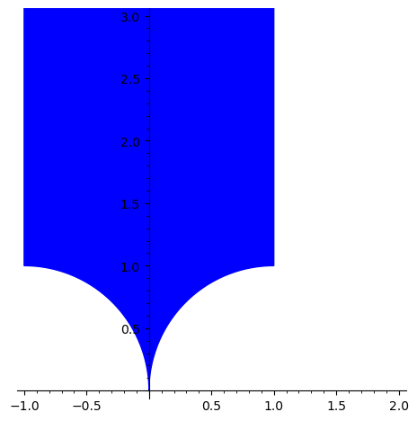

hyperbolic#
Plotting primitives for subsets of the hyperbolic plane
EXAMPLES:
Usually, the primitives defined here should not be used directly. Instead the
flatsurf.geometry.hyperbolic.HyperbolicConvexSet.plot() method of
hyperbolic sets internally uses these primitives:
sage: from flatsurf import HyperbolicPlane
sage: H = HyperbolicPlane()
sage: geodesic = H.vertical(0)
sage: plot = geodesic.plot()
sage: list(plot)
[CartesianPathPlot([CartesianPathPlotCommand(code='MOVETO', args=(0.000000000000000, 0.000000000000000)), CartesianPathPlotCommand(code='RAYTO', args=(0, 1))])]
Note
The need for these primitives arises because SageMath has no good facilities to plot infinite objects such as lines and rays. However, these are needed to plot subsets of the hyperbolic plane in the upper half plane model.
- class flatsurf.graphical.hyperbolic.CartesianPathPlot(commands, options=None)[source]#
A plotted path in the hyperbolic plane, i.e., a sequence of commands and associated control points in the hyperbolic plane.
The
plotmethods of most hyperbolic convex sets rely on such a path. Usually, such a path should not be produced directly.This can be considered a more generic version of
sage.plot.line.Lineandsage.plot.polygon.Polygonsince this is not limited to finite line segments. At the same time this generalizes matplotlib’sPathsomewhat, again by allowing infinite rays and lines.INPUT:
commands– a sequence ofHyperbolicPathPlotCommanddescribing the path.options– a dict orNone(the default), options to affect the plotting of the path; the options accepted are the same thatPolygonofsage.plot.polygonaccepts.
EXAMPLES:
A geodesic plot as a single such path (wrapped in a SageMath graphics object):
sage: from flatsurf import HyperbolicPlane sage: from flatsurf.graphical.hyperbolic import CartesianPathPlot, CartesianPathPlotCommand sage: H = HyperbolicPlane() sage: P = H.vertical(0).plot() sage: isinstance(P[0], CartesianPathPlot) True
The sequence of commands should always start with a move command to establish the starting point of the plot; note that coordinates are always given in the Cartesian two dimension plot coordinate system:
sage: P = CartesianPathPlot([ ....: CartesianPathPlotCommand("MOVETO", (0, 0)) ....: ])
After the initial move, a sequence of arcs can be drawn to represent objects in the upper half plane model; the parameters is the center and the end point of the arc:
sage: P = CartesianPathPlot([ ....: CartesianPathPlotCommand("MOVETO", (-1, 0)), ....: CartesianPathPlotCommand("ARCTO", ((0, 0), (0, 1))), ....: ])
We can also draw segments to represent objects in the Klein disk model:
sage: P = CartesianPathPlot([ ....: CartesianPathPlotCommand("MOVETO", (-1, 0)), ....: CartesianPathPlotCommand("LINETO", (0, 0)), ....: ])
Additionally, we can draw rays to represent verticals in the upper half plane model; the parameter is the direction of the ray, i.e., (0, 1) for a vertical:
sage: P = CartesianPathPlot([ ....: CartesianPathPlotCommand("MOVETO", (0, 0)), ....: CartesianPathPlotCommand("RAYTO", (0, 1)), ....: ])
Similarly, we can also move the cursor to an infinitely far point in a certain direction. This can be used to plot a half plane, e.g., the point with non-negative real part:
sage: P = CartesianPathPlot([ ....: CartesianPathPlotCommand("MOVETO", (0, 0)), ....: CartesianPathPlotCommand("MOVETOINFINITY", (1, 0)), ....: CartesianPathPlotCommand("MOVETOINFINITY", (0, 1)), ....: CartesianPathPlotCommand("LINETO", (0, 0)), ....: ])
In a similar way, we can also draw an actual line, here the real axis:
sage: P = CartesianPathPlot([ ....: CartesianPathPlotCommand("MOVETOINFINITY", (-1, 0)), ....: CartesianPathPlotCommand("RAYTO", (1, 0)), ....: ])
Finally, we can draw an arc in clockwise direction; here we plot the point in the upper half plane of norm between 1 and 2:
sage: P = CartesianPathPlot([ ....: CartesianPathPlotCommand("MOVETO", (-1, 0)), ....: CartesianPathPlotCommand("ARCTO", ((0, 0), (1, 0))), ....: CartesianPathPlotCommand("MOVETO", (2, 0)), ....: CartesianPathPlotCommand("RARCTO", ((0, 0), (-2, 0))), ....: CartesianPathPlotCommand("MOVETO", (-1, 0)), ....: ])
See also
hyperbolic_path()to create aGraphicscontaining aCartesianPathPlot, most likely you want to use that function if you want to use this functionality in plots of your own.- get_minmax_data()[source]#
Return a bounding box for this plot.
This implements the required interface of SageMath’s GraphicPrimitive.
EXAMPLES:
sage: from flatsurf.graphical.hyperbolic import CartesianPathPlot, CartesianPathPlotCommand sage: P = CartesianPathPlot([ ....: CartesianPathPlotCommand("MOVETO", (-1, 0)), ....: CartesianPathPlotCommand("LINETO", (0, 0)), ....: ]) sage: P.get_minmax_data() {'xmax': 0.0, 'xmin': -1.0, 'ymax': 0.0, 'ymin': 0.0}
sage: P = CartesianPathPlot([ ....: CartesianPathPlotCommand("MOVETO", (0, 0)), ....: CartesianPathPlotCommand("RAYTO", (0, 1)), ....: ]) sage: P.get_minmax_data()['ymax'] 1.0
- class flatsurf.graphical.hyperbolic.CartesianPathPlotCommand(code: str, args: tuple)[source]#
A plot command in the plot coordinate system.
EXAMPLES:
Move the cursor to the origin of the coordinate system:
sage: from flatsurf.graphical.hyperbolic import CartesianPathPlotCommand sage: P = CartesianPathPlotCommand("MOVETO", (0, 0))
Draw a line segment to another point:
sage: P = CartesianPathPlotCommand("LINETO", (1, 1))
Draw a ray from the current position in a specific direction:
sage: P = CartesianPathPlotCommand("RAYTO", (1, 1))
Move the cursor to a point at infinity in a specific direction:
sage: P = CartesianPathPlotCommand("MOVETOINFINITY", (0, 1))
When already at a point at infinity, then this draws a line:
sage: P = CartesianPathPlotCommand("RAYTO", (0, -1))
When at a point at infinity, we can also draw a ray to a finite point:
sage: P = CartesianPathPlotCommand("LINETO", (0, 0))
Finally, we can draw counterclockwise and clockwise sectors of the circle, i.e., arcs by specifying the other endpoint and the center of the circle:
sage: P = CartesianPathPlotCommand("ARCTO", ((2, 0), (1, 0))) sage: P = CartesianPathPlotCommand("RARCTO", ((0, 0), (1, 0)))
See also
CartesianPathPlotwhich draws a sequence of such commands with matplotlib.HyperbolicPathPlotCommand.make_cartesian()to generate a sequence of such commands from a sequence of plot commands in the hyperbolic plane.- args: tuple#
- code: str#
- class flatsurf.graphical.hyperbolic.HyperbolicPathPlotCommand(code: str, target: HyperbolicPoint)[source]#
A step in a hyperbolic plot.
Such a step is independent of the model chosen for the plot. It merely draws a segment (
LINETO) in the hyperbolic plan or performs a movement without drawing a segment (MOVETO).Each command has a parameter, the point to which the command moves.
A sequence of such commands cannot be plotted directly. It is first converted into a sequence of
CartesianPathPlotCommandwhich realizes the commands in a specific hyperbolic model.EXAMPLES:
sage: from flatsurf import HyperbolicPlane sage: from flatsurf.graphical.hyperbolic import HyperbolicPathPlotCommand sage: H = HyperbolicPlane() sage: HyperbolicPathPlotCommand("MOVETO", H(0)) HyperbolicPathPlotCommand(code='MOVETO', target=0)
- cartesian(model, cursor=None, fill=True, stroke=True)[source]#
Return the sequence of commands that realizes this plot in the Cartesian plot coordinate system.
INPUT:
model– one of"half_plane"or"klein"cursor– a point in the hyperbolic plane orNone(the default); assume that the cursor has been positioned atcursorbefore this command.fill– a boolean; whether to return commands that produce the correct polygon to represent the area of the polygon.stroke– a boolean; whether to return commands that produce the correct polygon to represent the lines of the polygon.
EXAMPLES:
sage: from flatsurf import HyperbolicPlane sage: from flatsurf.graphical.hyperbolic import HyperbolicPathPlotCommand sage: H = HyperbolicPlane() sage: command = HyperbolicPathPlotCommand("MOVETO", H(0)) sage: command.cartesian("half_plane") [CartesianPathPlotCommand(code='MOVETO', args=(0.000000000000000, 0.000000000000000))] sage: command.cartesian("klein") [CartesianPathPlotCommand(code='MOVETO', args=(0.000000000000000, -1.00000000000000))] sage: command = HyperbolicPathPlotCommand("LINETO", H(1)) sage: command.cartesian("half_plane", cursor=H(0)) [CartesianPathPlotCommand(code='RARCTO', args=((1.00000000000000, 0.000000000000000), (0.500000000000000, 0)))] sage: command.cartesian("klein", cursor=H(0)) [CartesianPathPlotCommand(code='LINETO', args=(1.00000000000000, 0.000000000000000))] sage: command = HyperbolicPathPlotCommand("LINETO", H(oo)) sage: command.cartesian("half_plane", cursor=H(1)) [CartesianPathPlotCommand(code='RAYTO', args=(0, 1))] sage: command.cartesian("klein", cursor=H(1)) [CartesianPathPlotCommand(code='LINETO', args=(0.000000000000000, 1.00000000000000))]
- code: str#
- static create_move_cartesian(start, end, model, stroke=True, fill=True)[source]#
Return a list of
CartesianPathPlotCommandthat represent the open “segment” on the boundary of a polygon connectingstartandend.This is a helper function for
make_cartesian().INPUT:
start– aHyperbolicPointend– aHyperbolicPointmodel– one of"half_plane"or"klein"in which model to realize this segmentstroke– a boolean (default:True); whether this is part of a stroke path that is not filledfill– a boolean (default:True); whether this is part of a filled path that is not stroked
EXAMPLES:
sage: from flatsurf import HyperbolicPlane sage: from flatsurf.graphical.hyperbolic import HyperbolicPathPlotCommand sage: H = HyperbolicPlane() sage: HyperbolicPathPlotCommand.create_move_cartesian(H(0), H(1), "half_plane", stroke=True, fill=False) [CartesianPathPlotCommand(code='MOVETO', args=(1.00000000000000, 0.000000000000000))]
- static create_segment_cartesian(start, end, model)[source]#
Return a sequence of
CartesianPathPlotCommandthat represent the closed boundary of aHyperbolicConvexPolygon, namely the segment toend(from the previous positionstart.)This is a helper function for
cartesian().INPUT:
start– aHyperbolicPointend– aHyperbolicPointmodel– one of"half_plane"or"klein"in which model to realize this segment
EXAMPLES:
sage: from flatsurf import HyperbolicPlane sage: from flatsurf.graphical.hyperbolic import HyperbolicPathPlotCommand sage: H = HyperbolicPlane()
A finite segment in the hyperbolic plane; note that we assume that “cursor” is at
start, so only the command that goes toendis returned:sage: HyperbolicPathPlotCommand.create_segment_cartesian(H(I), H(2*I), model="half_plane") [CartesianPathPlotCommand(code='LINETO', args=(0.000000000000000, 2.00000000000000))]
An infinite segment:
sage: HyperbolicPathPlotCommand.create_segment_cartesian(H(I), H(oo), model="half_plane") [CartesianPathPlotCommand(code='RAYTO', args=(0, 1))]
A segment that is infinite on both ends; it looks the same because the starting point is not rendered here:
sage: HyperbolicPathPlotCommand.create_segment_cartesian(H(0), H(oo), model="half_plane") [CartesianPathPlotCommand(code='RAYTO', args=(0, 1))]
Note that this is a “closed” boundary of the polygon that is left of that segment unlike the “open” version produced by
create_move_cartesian()which contains the entire positive real axis:sage: HyperbolicPathPlotCommand.create_move_cartesian(H(0), H(oo), model="half_plane", stroke=True, fill=False) [CartesianPathPlotCommand(code='MOVETOINFINITY', args=(0, 1))] sage: HyperbolicPathPlotCommand.create_move_cartesian(H(0), H(oo), model="half_plane", stroke=False, fill=True) [CartesianPathPlotCommand(code='RAYTO', args=(1, 0)), CartesianPathPlotCommand(code='RAYTO', args=(0, 1))]
The corresponding difference in the Klein model:
sage: HyperbolicPathPlotCommand.create_segment_cartesian(H(0), H(oo), model="klein") [CartesianPathPlotCommand(code='LINETO', args=(0.000000000000000, 1.00000000000000))] sage: HyperbolicPathPlotCommand.create_move_cartesian(H(0), H(oo), model="klein", stroke=True, fill=False) [CartesianPathPlotCommand(code='MOVETO', args=(0.000000000000000, 1.00000000000000))] sage: HyperbolicPathPlotCommand.create_move_cartesian(H(0), H(oo), model="klein", stroke=False, fill=True) [CartesianPathPlotCommand(code='ARCTO', args=((0.000000000000000, 1.00000000000000), (0, 0)))]
Note
Sometimes there are problems on a very small scale due to our usage of RR internally. We should probably use ball arithmetic to make things more robust.
- static make_cartesian(commands, model, fill=True, stroke=True)[source]#
Return the sequence of
CartesianPathPlotCommandthat realizes the hyperboliccommandsin themodel.INPUT:
commands– a sequence ofHyperbolicPathPlotCommand.model– one of"half_plane"or"klein"fill– a boolean; whether to return commands that produce the correct polygon to represent the area of the polygon.stroke– a boolean; whether to return commands that produce the correct polygon to represent the lines of the polygon.
EXAMPLES:
sage: from flatsurf import HyperbolicPlane sage: from flatsurf.graphical.hyperbolic import HyperbolicPathPlotCommand sage: H = HyperbolicPlane()
A finite closed triangle in the hyperbolic plane:
sage: commands = [ ....: HyperbolicPathPlotCommand("MOVETO", H(I)), ....: HyperbolicPathPlotCommand("LINETO", H(I + 1)), ....: HyperbolicPathPlotCommand("LINETO", H(2 * I)), ....: HyperbolicPathPlotCommand("LINETO", H(I)), ....: ]
And its corresponding plot in different models:
sage: HyperbolicPathPlotCommand.make_cartesian(commands, model="half_plane") [CartesianPathPlotCommand(code='MOVETO', args=(0.000000000000000, 1.00000000000000)), CartesianPathPlotCommand(code='RARCTO', args=((1.00000000000000, 1.00000000000000), (0.500000000000000, 0))), CartesianPathPlotCommand(code='ARCTO', args=((0.000000000000000, 2.00000000000000), (-1.00000000000000, 0))), CartesianPathPlotCommand(code='LINETO', args=(0.000000000000000, 1.00000000000000))] sage: HyperbolicPathPlotCommand.make_cartesian(commands, model="klein") [CartesianPathPlotCommand(code='MOVETO', args=(0.000000000000000, 0.000000000000000)), CartesianPathPlotCommand(code='LINETO', args=(0.666666666666667, 0.333333333333333)), CartesianPathPlotCommand(code='LINETO', args=(0.000000000000000, 0.600000000000000)), CartesianPathPlotCommand(code='LINETO', args=(0.000000000000000, 0.000000000000000))]
Asking for a polygon that works for both fill and stroke is not always possible:
sage: commands = [ ....: HyperbolicPathPlotCommand("MOVETO", H(0)), ....: HyperbolicPathPlotCommand("MOVETO", H(1)), ....: HyperbolicPathPlotCommand("LINETO", H(oo)), ....: HyperbolicPathPlotCommand("LINETO", H(0)), ....: ] sage: HyperbolicPathPlotCommand.make_cartesian(commands, model="half_plane") Traceback (most recent call last): ... ValueError: exactly one of fill & stroke must be set sage: HyperbolicPathPlotCommand.make_cartesian(commands, model="half_plane", fill=False, stroke=True) [CartesianPathPlotCommand(code='MOVETO', args=(0.000000000000000, 0.000000000000000)), CartesianPathPlotCommand(code='MOVETO', args=(1.00000000000000, 0.000000000000000)), CartesianPathPlotCommand(code='RAYTO', args=(0, 1)), CartesianPathPlotCommand(code='LINETO', args=(0.000000000000000, 0.000000000000000))] sage: HyperbolicPathPlotCommand.make_cartesian(commands, model="half_plane", fill=True, stroke=False) [CartesianPathPlotCommand(code='MOVETO', args=(0.000000000000000, 0.000000000000000)), CartesianPathPlotCommand(code='LINETO', args=(1.00000000000000, 0.000000000000000)), CartesianPathPlotCommand(code='RAYTO', args=(0, 1)), CartesianPathPlotCommand(code='LINETO', args=(0.000000000000000, 0.000000000000000))]
- target: HyperbolicPoint#
- flatsurf.graphical.hyperbolic.hyperbolic_path(commands, model='half_plane', alpha=1, rgbcolor=(0, 0, 1), edgecolor=None, thickness=1, legend_label=None, legend_color=None, aspect_ratio=1.0, fill=True, **options)[source]#
Return a SageMath
Graphicsobject that represents the hyperbolic path encoded bycommands.INPUT:
commands– a sequence ofHyperbolicPathPlotCommandmodel– one of"half_plane"or"klein"
Many additional keyword arguments are understood, see
CartesianPathPlotfor details.EXAMPLES:
sage: from flatsurf.graphical.hyperbolic import HyperbolicPathPlotCommand, hyperbolic_path sage: from flatsurf import HyperbolicPlane sage: H = HyperbolicPlane() sage: hyperbolic_path([ ....: HyperbolicPathPlotCommand("MOVETO", H(0)), ....: HyperbolicPathPlotCommand("LINETO", H(I + 1)), ....: HyperbolicPathPlotCommand("LINETO", H(oo)), ....: HyperbolicPathPlotCommand("LINETO", H(I - 1)), ....: HyperbolicPathPlotCommand("LINETO", H(0)), ....: ]) ...Graphics object consisting of 2 graphics primitives
